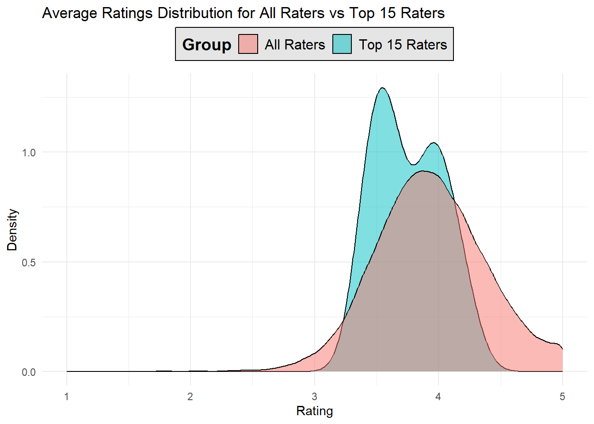

There were 53424 raters in the GoodReads community – that’s a lot! We chose to take a deeper dive into the top 15 raters by number of ratings to look at features such as on their average ratings.
| User ID | Total Ratings | Average Rating |
|---|---|---|
| 12874 | 200 | 3.450000 |
| 30944 | 200 | 4.210000 |
| 12381 | 199 | 3.427136 |
| 28158 | 199 | 3.939698 |
| 52036 | 199 | 3.442211 |
| 6630 | 197 | 3.573604 |
| 45554 | 197 | 4.030457 |
| 7563 | 196 | 3.500000 |
| 9668 | 196 | 3.841837 |
| 9806 | 196 | 3.632653 |
| 14372 | 196 | 3.602041 |
| 15604 | 196 | 3.954082 |
| 19729 | 196 | 3.663265 |
| 24143 | 196 | 3.948980 |
| 37834 | 196 | 4.132653 |
It looks like the Top 15 raters are on average a little less generous with their scores than the general GoodReads community. Blue

The 15 Top raters had a range of genres so we looked at the top 3 genres rated by how many ratings per genres. The clear winners were fiction and classics, with all 15 raters having fiction in their top 3 and 13 of the 15 rating classics.